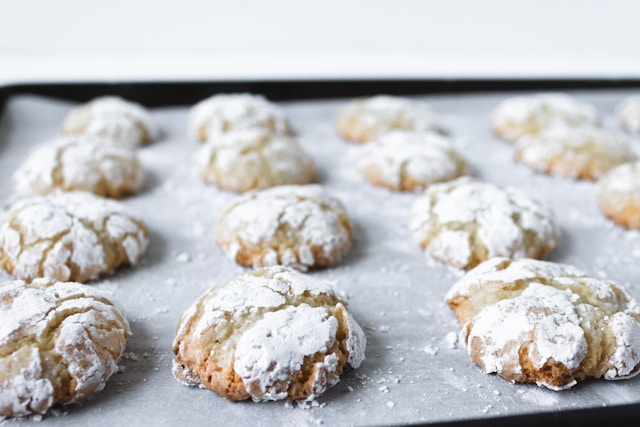

Home
Lemon Cookies

Photo by Quin Engle on Unsplash
Description
Soft and perfectly chewy lemon cookies - Easy to make. Coat them in powdered sugar before baking for crinkle cookies.
Recipe found at bake eat repeat.
Ingredients
- 2 tsp lemon zest, 1 lemon
- 1 cup granulated sugar
- 1/2 cup soft butter
- 1/2 tsp vanilla extract
- 1 large egg
- 1/4 cup lemon juice
- 1 pinch salt
- 1/4 tsp baking powder
- 1/8 tsp baking soda
- 1 1/2 cups all-purpose flour
- 1/2 cup powdered sugar
Instructions
- Mix together 2 cup granulated sugar and 2 tsp lemon zest until well combined.
- Add 1/2 cup softened butter to the sugar and mix until light and fluffy.
- Add 1/2 tsp vanilla extract, 1 large egg, and 1/4 cup lemon juice and mix well.
- Add 1 pinch of salt, 1/4 tsp baking powder, 1/8 tsp baking soda and 1 1/2 cups flour and mix until combined.
- Chill the dough for one to two hours in the fridge.
- Preheat the oven to 350 degrees F (175 degrees C).
- Line two baking sheets with parchment paper. Set aside.
- Roll the cookie dough into tablespoon sized balls, roll them in pwdered sugar and place them 2 inches apart on the baking sheet.
- Bake for 10-11 minutes or until they are just starting to brown on the edges and are no longer shiny. Do not over bake the cookies.
- Allow the cookies to cool on the baking sheet for 5-10 minutes before moving to a wire rack to cool completely.